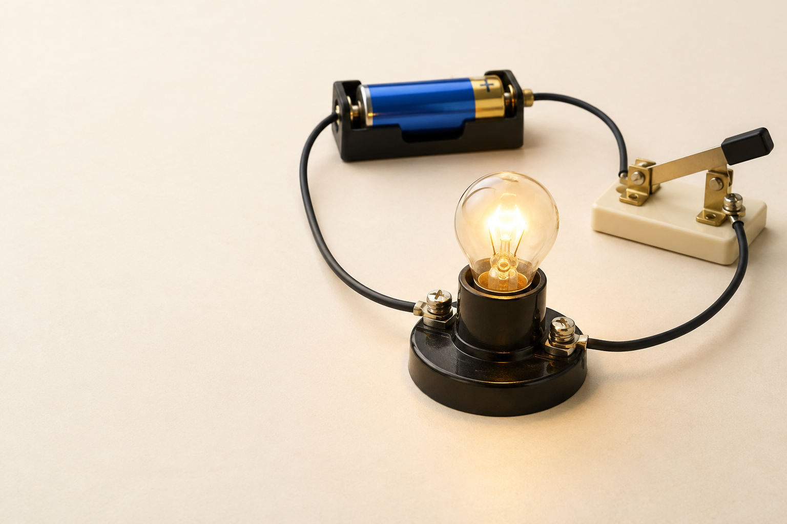

中2 理科・物理電流と
電流と
回路

中2 理科 電流と回路SeeD EDUCATION
スイッチを入れると？
スイッチを閉じる豆電球がつく
電池から、電池へ道すじがひと続き
電流が流れる道すじ回路
中2 理科 電流と回路SeeD EDUCATION
途中を切ると、どうなる？
スイッチを開く豆電球が消える
道すじが途切れると電流は流れない
中2 理科 電流と回路SeeD EDUCATION
ポンプで、水を循環させる
ポンプを動かす水がぐるっと流れる
管の中は最初から水で満たされている
流れた水はポンプへ戻る
中2 理科 電流と回路SeeD EDUCATION
同じ時間に、どれだけ通る？
同じ場所に注目一定時間に通る水の量
たくさん通るほど流れる量が大きい
電気では、この量に対応電流の大きさ
中2 理科 電流と回路SeeD EDUCATION
ポンプのはたらきを強くする
同じ管のままポンプを強くする
水を流そうとするはたらきが大きくなる
電気では、このはたらきに対応電圧
中2 理科 電流と回路SeeD EDUCATION
ポンプの役割をするのは？
水を循環させるポンプ
電流を流すはたらき電池
電池は水のたとえのポンプにあたる
中2 理科 電流と回路SeeD EDUCATION
電流は、どちら向き？
電源の外側の回路では＋極から−極へ
途中の豆電球でも同じ向きに流れる
中2 理科 電流と回路SeeD EDUCATION
どれだけ、電気が流れる？
ある場所を1秒間に通る電気の量に注目
電流の単位A（アンペア）
電流の大きさを測る電流計
中2 理科 電流と回路SeeD EDUCATION
電流を流そうとするはたらき
電流を流そうとするはたらきの大きさ
電圧の単位V（ボルト）
2か所の間で測る電圧計
中2 理科 電流と回路SeeD EDUCATION
電流と電圧を分けよう
電流1秒間に通る電気の量 ／ 単位 A
電圧流そうとするはたらき ／ 単位 V
測る場所電流は途中、電圧は2か所の間
中2 理科 電流と回路SeeD EDUCATION
器具を、共通の記号で表す
電池の記号長い線が＋極
器具どうしをつなぐ線導線
記号で表した図回路図
中2 理科 電流と回路SeeD EDUCATION
つながりを、線でたどる
実物を見ながら電池から一周たどる
回路図でもつながりは同じ
中2 理科 電流と回路SeeD EDUCATION
一本道につなぐ
枝分かれがない道すじは1本
このつなぎ方を直列回路
中2 理科 電流と回路SeeD EDUCATION
枝分かれさせてつなぐ
途中で枝分かれそれぞれの道に豆電球
このつなぎ方を並列回路
中2 理科 電流と回路SeeD EDUCATION
直列？ それとも並列？
左の回路直列回路
右の回路並列回路
見分けるところ枝分かれがあるか
中2 理科 電流と回路SeeD EDUCATION
電流計を見てみよう
針が指す目盛りを読む電流の大きさがわかる
＋端子と、選ぶ−端子測る範囲を変えられる
中2 理科 電流と回路SeeD EDUCATION
測りたい道の、途中に入れる
測りたい部分と直列につなぐ
電流が電流計の中を通るようにする
＋端子は電源の＋極側へ
中2 理科 電流と回路SeeD EDUCATION
最初は、大きい範囲から
大きさがわからないとき5 A端子から
針の振れが小さければ500 mA、50 mAへ
端子を変えるときはいったん電源を切る
中2 理科 電流と回路SeeD EDUCATION
同じ針でも、読み方が変わる
5 A端子なら2.00 A
500 mA端子なら200 mA
50 mA端子なら20.0 mA
中2 理科 電流と回路SeeD EDUCATION
AとmAを行き来する
1 Aは1000 mA
200 mAは0.20 A
0.35 Aは350 mA
中2 理科 電流と回路SeeD EDUCATION
場所を変えて、測ってみる
Aの場所0.30 A
Bの場所0.30 A
Cの場所0.30 A
直列回路ではどこでも同じ電流
中2 理科 電流と回路SeeD EDUCATION
豆電球の後で、電流は減る？
前と後で比べると電流は同じ
豆電球を通っても電流は減らない
中2 理科 電流と回路SeeD EDUCATION
枝分かれすると、どうなる？
枝分かれする前 A0.50 A
上の枝 B0.20 A
下の枝 C0.30 A
全体の電流は枝の電流の和
中2 理科 電流と回路SeeD EDUCATION
合流した後は？
上と下の枝が合流0.20 A ＋ 0.30 A
戻る道の電流 D0.50 A
枝分かれの前と後電流は同じ
中2 理科 電流と回路SeeD EDUCATION
下の枝には、何A流れる？
全体から、上の枝を引く0.80 − 0.30
下の枝の電流0.50 A
中2 理科 電流と回路SeeD EDUCATION
電圧計を見てみよう
電流を流そうとするはたらきを測る
単位はV（ボルト）
中2 理科 電流と回路SeeD EDUCATION
測りたい部分の、両端へ
測りたい部分と並列につなぐ
豆電球の両端につなぐ
＋端子は電源の＋極側へ
中2 理科 電流と回路SeeD EDUCATION
電圧も、大きい範囲から
大きさがわからないとき300 V端子から
針の振れを見て15 V、3 Vへ
測る電圧に合う範囲を選ぶ
中2 理科 電流と回路SeeD EDUCATION
選んだ端子を、先に確認
3 V端子なら1.20 V
15 V端子なら6.00 V
300 V端子なら120 V
中2 理科 電流と回路SeeD EDUCATION
2つの豆電球に、どう加わる？
電源の両端3.0 V
豆電球①の両端1.0 V
豆電球②の両端2.0 V
直列回路では各部分の和が全体
中2 理科 電流と回路SeeD EDUCATION
枝が分かれると、電圧は？
電源の両端3.0 V
上の豆電球の両端3.0 V
下の豆電球の両端3.0 V
並列回路ではどの枝も、電源と同じ
中2 理科 電流と回路SeeD EDUCATION
もう一方には、何V加わる？
全体から、片方を引く6.0 − 2.0
豆電球②の電圧4.0 V
中2 理科 電流と回路SeeD EDUCATION
計器のつなぎ方を比べよう
電流計測る部分と直列
電圧計測る部分と並列
どちらの＋端子も電源の＋極側へ
中2 理科 電流と回路SeeD EDUCATION
直列で、1つの道を切ると？
スイッチを開く2つとも消える
一本道が切れたので電流が流れない
中2 理科 電流と回路SeeD EDUCATION
並列で、上の枝だけ切ると？
上の枝のスイッチを開く上の豆電球が消える
下の枝はつながっている下の豆電球はついたまま
中2 理科 電流と回路SeeD EDUCATION
同じ豆電球を、2つ使うと？
1個だけのときと比べる直列では暗くなる
並列では1個のときとほぼ同じ
比べる条件同じ電源・同じ豆電球
中2 理科 電流と回路SeeD EDUCATION
直列と並列のきまり
直列回路電流は同じ ／ 電圧は和
並列回路電流は和 ／ 電圧は同じ
中2 理科 電流と回路SeeD EDUCATION
電流と電圧、説明できる？
電流とは1秒間に通る電気の量
電圧とは流そうとするはたらき
回路を読むときは道すじと、測る場所に注目
中2 理科 電流と回路SeeD EDUCATION